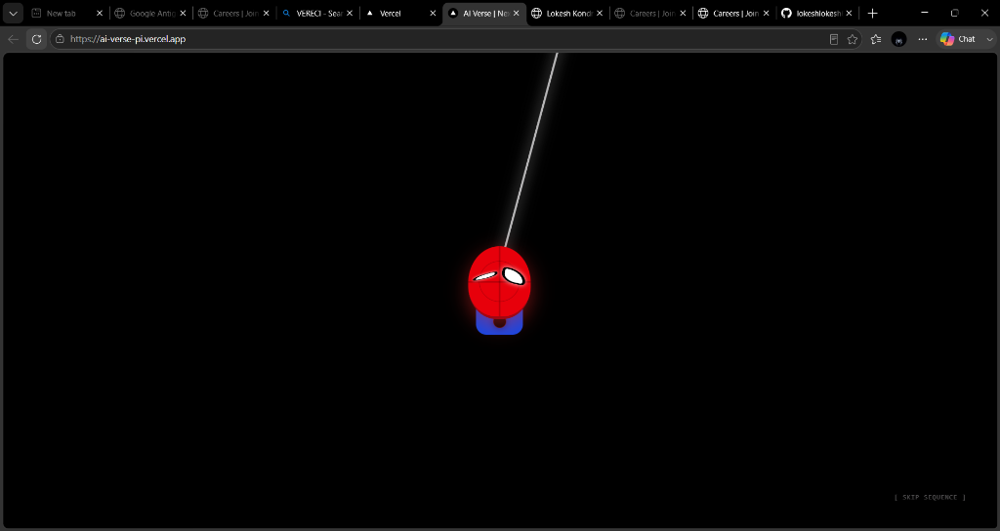

Building AI Verse: A Journey in Development
I started AI Verse to learn web development and build a strong portfolio project. I wanted to create my own ChatGPT-like AI assistant.
A personal collection of research, projects, and philosophical inquiries into Artificial Intelligence and Data Science. Written by Lokesh Kondrugonti, Data Science Student at JBIET.

A comprehensive journey from zero web development knowledge to deploying a fully functional AI-powered chat application. Discover how I tackled UI design, API integration, and the future of student-led AI tools.
I started AI Verse to learn web development and build a strong portfolio project. I wanted to create my own ChatGPT-like AI assistant.
Reflecting on the motivations, career goals, and the fascination with Artificial Intelligence that led me to choose this field.
How Generative AI is reshaping industries and why it represents an unprecedented opportunity for students in 2026.

I am a Data Science student at J.B. Institute of Engineering and Technology, Hyderabad. My passion lies at the intersection of Artificial Intelligence, Machine Learning, and building practical applications that solve real-world problems.
Building AI Verse was a turning point in my education, teaching me that the best way to understand technology is to create it from scratch. This blog is where I document those lessons.
Get in TouchProfessional updates on my latest research and projects delivered directly to your inbox. No spam, just pure technical insights.